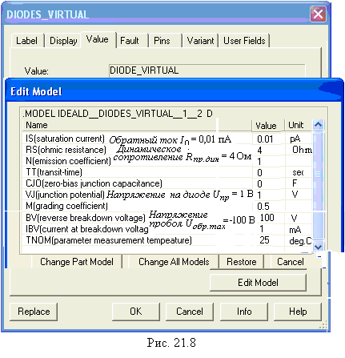
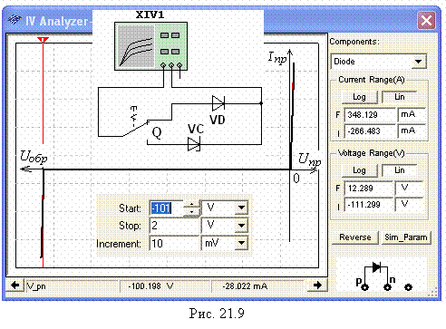
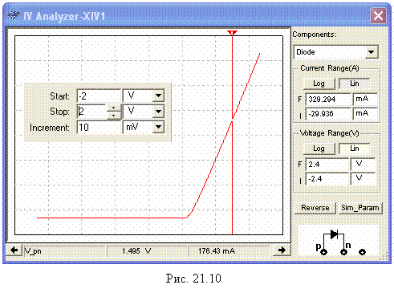

Задание
1. Запустить лабораторный комплекс Labworks и щёлкнуть
мышью на команде Lr21. Щёлкая мышью на соответствующих кнопках и заставках
меню пользовательского интерфейса комплекса Labworks, изучить "Теоретические сведения …" и рассчитать по формулам (см. табл. 21.1) значения параметров
компонентов схемы (рис. 21.1) для их последующей установки при моделировании
схемы. Запустить
программу MS10,
щелкнув мышью на команде Эксперимент меню комплекса Labworks. В открывшемся окне электронной тетради занести в ячейки табл. 21.1 рассчитанные значения
параметров компонентов схемы (рис. 21.1). Собрать схему (рис. 21.1) испытания виртуального диода VD на рабочем
поле среды MS10
или открыть файл 21.1.ms10.
Т а б л и ц а 21.1
|
Вариант N |
Е2, В |
Uобр, В |
Iобр, мкА |
Е1, В |
Uпр, В |
Iпр, мА |
Принять Iпр.ном = = Е1/(R1 + Rпр.дин) = …, А, где Е1 = 2 В |
|
1…15 |
100 + N = … |
0,1Е2 = … |
|
0,5 |
|
|
|
|
0,2Е2 = … |
|
0,75 |
|
|
|||
|
0,3Е2 = … |
|
1 |
|
|
|||
|
16…30 |
100 - N = … |
0,5Е2 = … |
|
1,25 |
|
|
|
|
1,0Е2 = … |
|
1,5 |
|
|
|||
|
R2 = R1 = 2 Oм |
1.75 |
|
|
||||
|
2 |
|
|
|||||
Щелкнуть два
раза мышью вначале на изображении источника напряжения Е2 и установить
значение Е2, затем на изображении источника Е1 и установить
значение Е1 = 2 В, и наконец на изображении
диода VD. В открывшемся окне диода выбрать
команду Edit Model, а в её закладках выделить и установить
(согласно варианту N) следующие параметры (рис. 21.8):
• RS (прямое динамическое сопротивление Rпр.дин, например 4 Ом);
• Bv (напряжение пробоя Uобр. max = 100 + N, B (для вариантов 1…15) и Uобр.max = 100 - N, В (для вариантов 16…30)).
Примечание. Развёрнутые
названия выводимых параметров компонентов схем можно найти в описании
программной среды MS10 (MultisimТМ Component Reference Guide).
Значения параметров компонента могут быть изменены
и записаны как в паспорт данного компонента (Change Part Model), так и в паспорта всех аналогичных компонентов (Change All Models) (см. рис. 21.8, внизу). Исходные значения
параметров восстанавливаются после щелчка мышью на кнопке команды Restore.

Снятие обратной ветви ВАХ диода рекомендуется проводить при изменении
напряжения на его аноде от -1,1Uобр.max
до 0, а прямой ветви (в том числе и стабилитрона) - от 0 до Uпр = 0,75…1,0 В.

После запуска программы MS10 (щелчка мышью на кнопке меню среды MS10) снять показания
приборов и занести их в табл. 21.1 электронной тетради. Методика снятия ВАХ диода описана в разделе "Теоретические положения …". По
данным эксперимента построить график обратной и прямой ветви ВАХ диода.
Скопировать изображение схемы с показаниями приборов при Е1 = 1 В на
страницу отчёта.

Для моделирования обратной и прямой ветвей
ВАХ диода с помощью характериографа ХIV1 (см. рис. 21.7) рекомендуется установить пределы
напряжения [Uобр.max, 2 В]. Окно с результатами моделирования ВАХ виртуального
диода VD приведено на рис. 21.9. Перемещая визирную линию
в окне, замечаем, что пробой диода происходит при Uобр.max » -100 В. При моделировании только прямой ветви ВАХ
диода целесообразно задать пределы напряжения [-2 В, 2 В] (рис. 21.10).
Записав значения координат точек пересечения
визирной линии с прямой ветвью ВАХ (см. нижнюю строку на рис. 21.10), определить статическое Rпр.cт и
динамическое Rпр.дин сопротивления диода, воспользовавшись формулами (см. рис. 21.2).